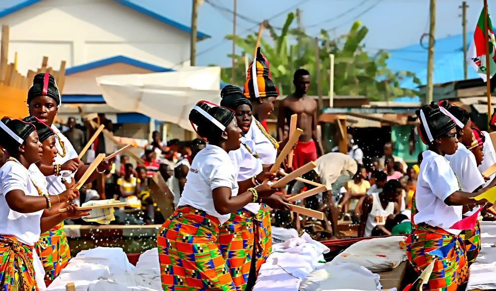
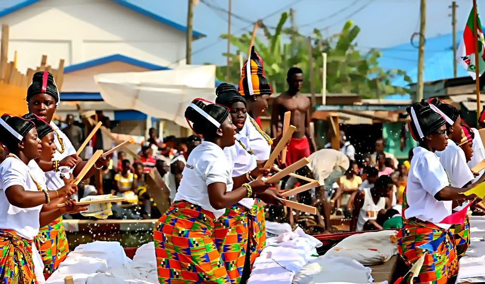

Rich Festivals
Ghana celebrates numerous colorful festivals that honor the past and bring communities together, showcasing music, dance, and tradition.
Immerse yourself in the vibrant and diverse culture of Ghana, where heritage meets modernity. Explore our festivals, cuisine, and customs that have stood the test of time.

Ghana celebrates numerous colorful festivals that honor the past and bring communities together, showcasing music, dance, and tradition.
Ghanaian cuisine is a flavorful journey of traditional dishes like Jollof rice, Fufu, and more, rich with spices and history.